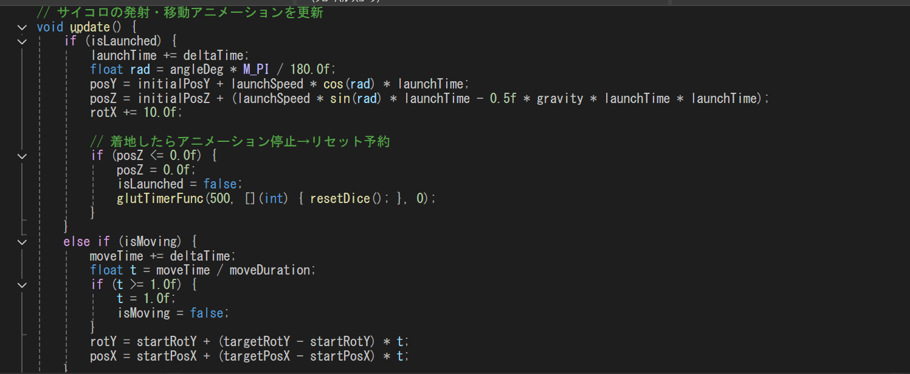
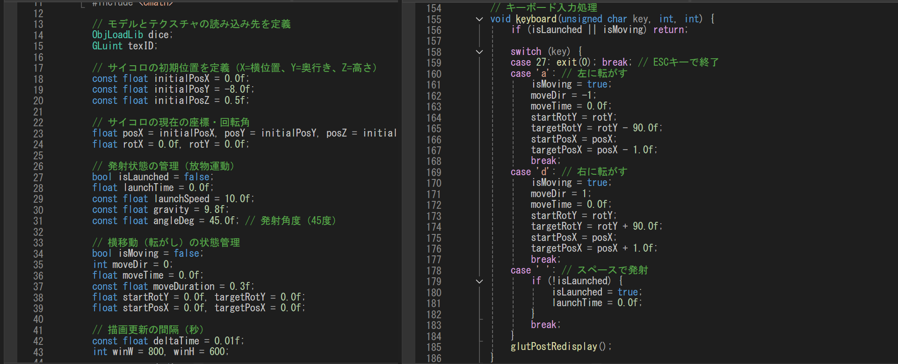

・テクスチャが貼られているキューブのモデルを飛ばします。以下の実装がされています。
・地面があり、手前にテクスチャの貼られているキューブがあります。
・発射される前は、”A”で左に”D”で右に、それぞれ左回転、右回転しながら移動します。
・スペースキーを押すと画面奥に向かって斜方投射され、地面についたら止まり元の位置に戻ります。
以下の動画は実行結果の動画になります。
開発環境：Visual Studio
使用言語：C++
使用技術：OpenGL / GLUT
外部ライブラリ：stb_image（画像読み込み）
その他：自作ライブラリ（ObjLoadLib）
物理演算の基礎を学び、実際にプログラムとして実装することで理解を深めることを目的としました。
特に、オブジェクトの動きや力の働きがどのように表現されるのかを学ぶことを目標としました。
A・Dキーによる左右移動と、スペースキーでの斜方投射（放物線移動）を実装しました。
また、投射後にキューブが操作不能になるのを防ぐため、着地後に自動で初期位置へリセットされる処理を追加いたしました。
これにより、ストレスなく繰り返し挙動を検証できる「遊び心地」を意識した設計にしています。


今回の制作を通して、立方体の動きを滑らかに見せるための処理について学ぶことができました。
特に、位置や回転を段階的に更新することで、スムーズな動きを実現できることを理解しました。
一方で、調整に時間がかかる場面もあったため、今後はより効率よく実装できるようにしたいと考えています。